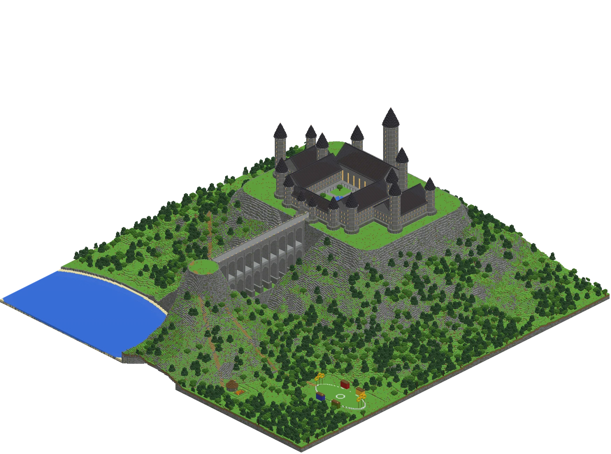

Lageplan (Draufsicht)
Gesamtareal: 500 × 500 Blöcke
Höhe: Berg 110 Blöcke, mit Schloss ca. 210 Blöcke (vom Tal bis zur Turmspitze)

Bauplan | Eigener Stil | Überleben | Riesig
Auf einem gewaltigen Berg. Mit allem, was dazugehört.
In 3D herumfliegen →Träume groß…
und baue sie!
Gesamtansicht aus dem Blockmodell · 500 × 500 Blöcke
Gesamtareal: 500 × 500 Blöcke
Höhe: Berg 110 Blöcke, mit Schloss ca. 210 Blöcke (vom Tal bis zur Turmspitze)
Antippen öffnet die Ebene im Ebenen-Viewer.
Exakt gezählt aus dem Modell. Wähle „Berg & Gelände", um die Blöcke für den Berg zu sehen (als 3–4 Blöcke dicke Hülle gebaut, innen hohl).
0 / 7 erledigt
Viel Erfolg beim Bauen!
Lieber frei durch die fertige Welt fliegen und zuschauen, wie sie Ebene für Ebene entsteht? Zur 3D-Ansicht.
Wie der Ebenen-Modus von Litematica: Wähle ein Bauwerk und gehe Ebene für Ebene von unten nach oben. Jede Kachel ist ein Block. Gelbe Linien markieren alle 10 Blöcke. Mit der Maus (oder dem Finger) siehst du Koordinate und Block. Tasten: Bild↑/Bild↓ oder +/−.
Zeige auf einen Block …
Alle Bauwerke als .litematic-Datei – Block für Block identisch mit den Plänen auf dieser Seite. Gebaut wird in Minecraft 26.3 (Java). Die Dateien nutzen das Datenformat von 1.21.5 und auch neuere Blöcke wie Tuffziegel, Harzziegel, Laubstreu, Wildblumen, Glühwürmchenbüsche, Tropfstein und Amethyst. Litematica in 26.3 wandelt sie beim Laden automatisch um; alle Blöcke gibt es in 26.3.
Bauversion des Berges: In den Litematica-Dateien für Berg, Gelände und Gesamtprojekt ist kein Wasser (das kommt aus deiner Welt). Rund um See, Fluss und Küste sitzen Platzhalter aus magenta Wolle, damit das Wasser nicht in den hohlen Berg ausläuft. Auch unter Sand und Kies liegen Platzhalter, damit nichts herunterfällt. Eine Grasblock-Linie auf Wasserhöhe steckt die ganze 500 × 500 Fläche ab. Platzhalter und Graslinie entfernst du nach dem Bauen wieder.
.litematic-Dateien in den Ordner .minecraft/schematics.Ursprung ist jeweils die Nordwest-Ecke unten, relativ zum Areal-Ursprung (Seegrund = Y 0, Wasser bis Y 3, Talboden Y 5). Lege das Areal so, dass Y 0 etwa auf Höhe 60 liegt – dann endet die höchste Turmspitze bei ca. Y 270.
| Bauwerk | X | Y | Z | Größe |
|---|
Am einfachsten: die Datei hogwarts-gesamt.litematic laden – sie enthält alle Bauwerke als Regionen bereits an der richtigen Stelle.